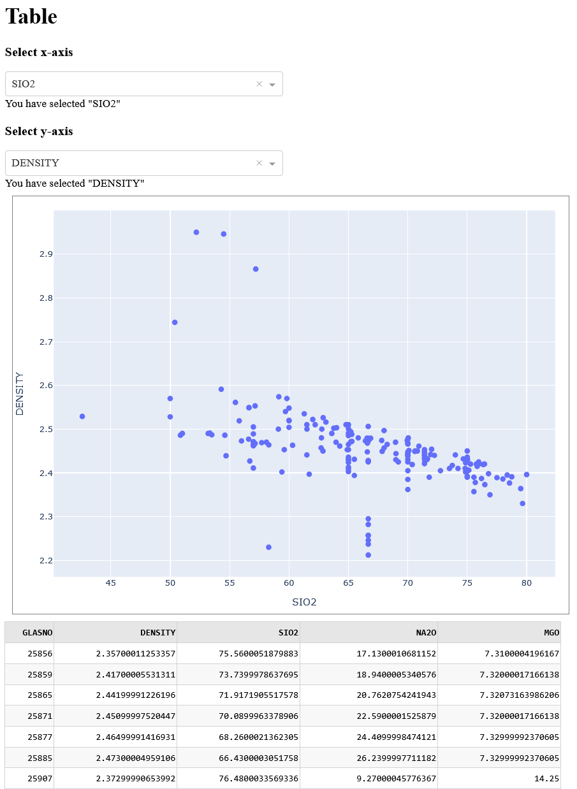
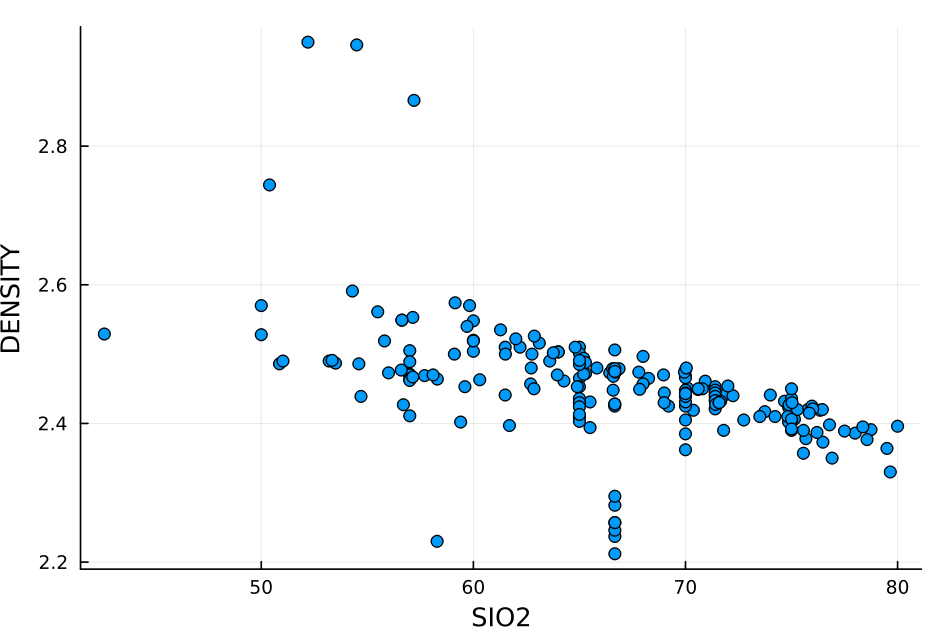
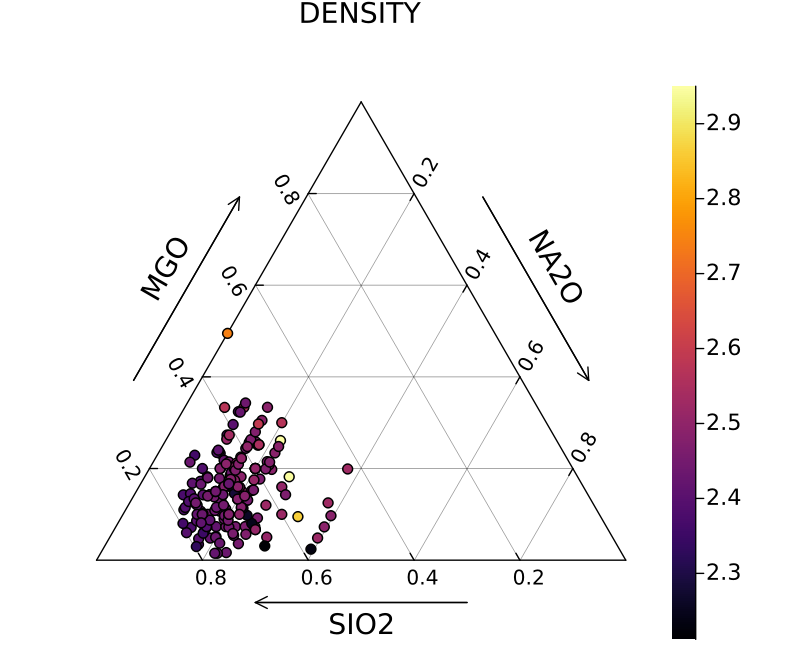
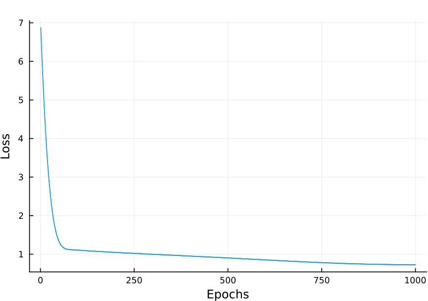

Examples
Example 1: Exploring Glass Properties with SciGlassDatabase in Julia
This example will guide you through using the SciGlassDatabase package in Julia to retrieve, visualize, and explore property data for glass compositions. Prerequisites:
- Julia Installation: Ensure you have Julia installed on your system. You can download it from the official Julia website (https://julialang.org/downloads/).
- Pkg Package: Julia's built-in package manager (
Pkg) should be available. - SciGlassDatabase Package: You need to install the
SciGlassDatabasepackage. Open your Julia REPL (the interactive command-line interface) and run the following commands:
using Pkg
Pkg.add(url="https://github.com/ravinderbhattoo/SciGlassDatabase.git")
# You might also need a plotting package for visualization and other packages
Pkg.add("Plots")Step 1: Setting up the Environment and Loading the Package
- Load the SciGlassDatabase Package: In your Julia REPL or script, load the
SciGlassDatabasepackage:
using SciGlassDatabase- Load Essential Data: Some packages might require an initial setup step. The
SciGlassDatabasepackage in your example usesload_essentials()for loading data tables from SciGlass dataset:
load_essentials()Run this command to ensure the necessary data structures or connections are initialized. For first time, it will download artifacts from github and require internet connection. Note that not all tables are loaded which can be done using load_all_tables!.
Step 2: Specifying the Glass Composition System
- Define the components of the glass system you are interested in. In this example, it's a ternary system of Silicon Dioxide (SiO2), Sodium Oxide (Na2O), and Magnesium Oxide (MgO):
comps = "SiO2-Na2O-MgO"The components are specified as a hyphen-separated string.
Step 3: Retrieving Composition Data for a Specific Property
- Use the
get_compositionsfunction to retrieve data. Here, we are fetching data for the "Density" property for the specifiedcompsglass:
df = get_compositions(;property=["Density"], composition=comps)property=["Density"]tells the function to retrieve data related to the "Density" property. You can provide a list of properties if you want to retrieve data for multiple properties (e.g.,property=["Density", "Viscosity"]).composition=compsspecifies the glass system we are interested in.- The result is stored in a variable named
df. This variable will hold aDataFrameobject, which is a tabular data structure commonly used in Julia for data manipulation and analysis.
Step 4: Displaying the Retrieved Data as a Table
- To get a quick look at the retrieved data, you can use the
show_table()function:
show_table(df)This will display the contents of the df DataFrame in a readable table format and utilizes Dash to show the table (follow the link shown on terminal), showing the compositions (as mol percentages of each component) and their corresponding Density values.
show_table(df; with_plot=true)If keyword argument "with_plot" is true, it will show table with plot capabilities.

Step 5: Creating a Scatter Plot of Property vs. Composition
- The
scatterplot_tablefunction allows you to visualize the relationship between a specific component's proportion and a property. Here, we plot the mole percentage of SiO2 against the Density:
scatterplot_table(df, :SIO2, :DENSITY):SIO2and:DENSITYare symbols representing the column names in yourdfDataFrame. Make sure these column names exist in your retrieved data. This command will generate a scatter plot where the x-axis represents the amount of SiO2 and the y-axis represents the Density. You might need to have a plotting backend loaded (likePlotswithpyplot()orgr()) for the plot to be displayed.

Step 6: Generating a Ternary Plot for Three-Component Glasses
- For visualizing properties in a three-component system, you can use the
scatterTernaryfunction:
scatterTernary(comps; property="DENSITY")compsagain specifies the three components of the system.property="DENSITY"indicates that the Density values should be visualized on the ternary diagram. The plot will show points representing different compositions within the SiO2-Na2O-MgO system, and the color of these points will correspond to the Density values.

Step 7: Retrieving Data with Metadata
- To get additional information (metadata) associated with the data points, you can use the
with_metadata=truekeyword argument in theget_compositionsfunction:
df = get_compositions(;property=["Density"], composition=comps, with_metadata=true)The df DataFrame will now include extra columns containing metadata, such as the source of the data (e.g., publication details), experimental conditions, or other relevant information available in the SciGlass database. You can then explore this metadata using standard DataFrame operations.
Example 2: Predicting Glass Density using Machine Learning with Flux package
This example demonstrates how to use the data retrieved from the SciGlassDatabase to train a simple neural network using the Flux.jl machine learning library in Julia. We will predict the density of SiO2-Na2O-MgO glasses based on their composition.
Prerequisites:
- Completion of Example 1: Ensure you have successfully installed and loaded the
SciGlassDatabasepackage and its dependencies as outlined in Example 1. - Flux.jl: Install the
Flux.jlpackage for machine learning:
using Pkg
Pkg.add("Flux")- Plots.jl: Ensure you have a plotting backend installed (as mentioned in Example 1) as we will visualize the loss during training. If you haven't already:
using Pkg
Pkg.add("Plots")- Statistics.jl: This is a base Julia package but we explicitly load it for the
meanandstdfunctions.
Step 1: Load Necessary Packages and Retrieve Data
- Load the required packages:
using SciGlassDatabase
using Flux
using Flux: train!
using Plots
using Statistics- Load essential data from
SciGlassDatabase:
load_essentials()- Specify the glass composition system and retrieve the density data:
comps = "SiO2-Na2O-MgO"
df = get_compositions(;property=["Density"], composition=comps)Step 2: Prepare Data for Machine Learning
- Extract the density values (our target variable,
y) and the composition features (our input features,x). We convert them toFloat32for compatibility with Flux and reshape them into column vectors:
y = Float32.(df.DENSITY')
x = Float32.(hcat(df.SIO2, df.NA2O, df.MGO)')df.DENSITY'transposes the 'DENSITY' column into a row vector.hcat(df.SIO2, df.NA2O, df.MGO)horizontally concatenates the 'SIO2', 'NA2O', and 'MGO' columns into a matrix where each row represents a glass composition. The transpose'then makes each composition a column vector, which is the expected input format for our model.
- Normalize the data: Normalizing the input features and the target variable can often improve the training process and the model's performance:
normalize(x) = (x .- mean(x)) ./ std(x)
x = normalize(x)
y = normalize(y)The normalize function subtracts the mean and divides by the standard deviation for each feature and the target variable.
Step 3: Define the Neural Network Model
- We define a simple feedforward neural network using
Flux.Chain:
model = Chain(
Dense(3, 10), # Input layer with 3 features (SiO2, Na2O, MgO) to 10 neurons
Dense(10, 10), # Hidden layer with 10 neurons to 10 neurons
Dense(10, 1) # Output layer with 10 neurons to 1 output (predicted density)
)This model has three dense layers: an input layer, one hidden layer, and an output layer.
- Get the parameters of the model using
Flux.params():
ps = Flux.params(model)Step 4: Define the Loss Function
- We use the Mean Squared Error (MSE) as our loss function, which measures the average squared difference between the model's predictions and the actual density values:
loss(model, x, y) = Flux.Losses.mse(model(x), y)Step 5: Choose an Optimizer
- We select the Adam optimizer, a common and effective optimization algorithm:
opt = Adam()
opt_state = Flux.setup(opt, model)Flux.setup(opt, model) initializes the optimizer's state based on the model's parameters.
Step 6: Train the Model
- Compute the initial loss before training:
loss_0 = loss(model, x, y)
println("Initial loss: $loss_0")- Prepare the training data as an array of tuples
(x, y):
data = [(x, y)]- Set the number of training epochs:
n_epochs = 1000- Initialize an array to store the loss values at each epoch for visualization:
loss_values = zeros(n_epochs)- Train the model for the specified number of epochs:
for epoch in 1:n_epochs
train!(loss, model, data, opt_state)
loss_values[epoch] = loss(model, x, y)
if epoch % 10 == 0
println("Epoch: $epoch, loss: ", loss_values[epoch])
end
end- The
train!function performs one optimization step using the provided loss function, model parameters, data, and optimizer state. - We record the loss at each epoch and print the loss every 10 epochs to monitor the training progress.
Step 7: Visualize the Training Loss
- Plot the loss values over the epochs to see how the model is learning:
Plots.plot(loss_values, label=nothing)
xlabel!("Epochs")
ylabel!("Loss")This plot should show a decreasing trend in the loss as the model learns to predict the density more accurately.

This example provides a basic introduction to using machine learning with data from the SciGlassDatabase. By building upon this foundation, you can explore more complex models and analyses to gain deeper insights into the relationships between glass composition and properties.
Further Exploration:
These examples covered the basics of retrieving and visualizing data using SciGlassDatabase. You can further explore the package's capabilities by:
- Querying for different properties: Experiment with different property names in the
propertyargument ofget_compositions. - Exploring different composition systems: Change the
compsvariable to investigate other glass systems. - Using different visualization functions: The
SciGlassDatabasepackage or related visualization packages might offer other types of plots and data exploration tools. - Filtering and analyzing the DataFrame: Use the functionalities of the
DataFrames.jlpackage to filter, sort, and analyze the retrieved data.